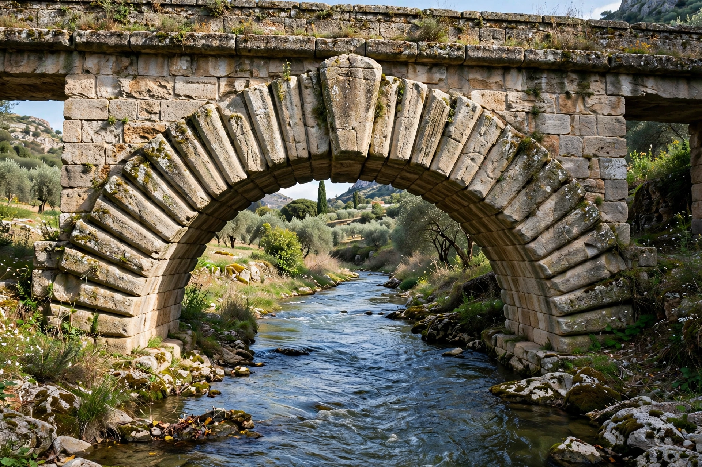

An arch is a curved vertical structure that spans an open space, transferring the weight of the load above it to supports (abutments or piers) at either side. Arches work by converting vertical loads into compressive forces along their curve; the wedge-shaped blocks of a masonry arch (voussoirs) press against one another, with the central keystone locking the structure. Because masonry is strong in compression but weak in tension, the pure-compression arch allowed far wider spans than the post-and-lintel system.

True arches appeared in Mesopotamian and Egyptian brick architecture by the 2nd millennium BCE, but it was the Romans who exploited the form systematically — in aqueducts, bridges, triumphal arches, and great vaulted interiors such as the Pantheon and the Colosseum. Medieval builders developed the pointed (Gothic) arch, which directed thrust more steeply downward and enabled taller, lighter structures. Islamic architecture added horseshoe, keel, and four-centred forms. Later materials — cast iron, steel, and reinforced concrete — produced record spans, from the Eads Bridge to modern tied-arch bridges.
Arches are classified by shape: semicircular (Roman), segmental, pointed, horseshoe, Tudor, parabolic, and catenary, among others. Structurally they may be fixed, two-hinged, or three-hinged, or tied by a horizontal member carrying the outward thrust. Related forms include the vault (an extruded arch) and the dome (a rotated arch).